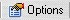

Changing any of these options affects only the Table/View/Query that will be opened and not the ones that are already open.
Changing any of these options affects only the Table/View/Query that will be opened and not the ones that are already open. Configuring DbSee Options
Click on the Main Toolbar button  to display the Options Dialog which has DbSee options grouped under 3 tabs Startup, Data and Preferences. The options that need some explanations are described below.
Changing any of these options affects only the Table/View/Query that will be opened and not the ones that are already open.
Data Tab
 Read Only When this is checked, you cannot edit the data. The Edit options on the Grid Options menu of Data Grid Toolbar are hidden, as a safety measure, till this option is turned off.
Read Only When this is checked, you cannot edit the data. The Edit options on the Grid Options menu of Data Grid Toolbar are hidden, as a safety measure, till this option is turned off.
 Allow Edit Only, Allow Edit/Delete/Append When this is checked you can edit/delete/append data. The Edit options on the Grid Options menu of Data Grid Toolbar are visible, so you can optionally change back to Read Only if you want.
Allow Edit Only, Allow Edit/Delete/Append When this is checked you can edit/delete/append data. The Edit options on the Grid Options menu of Data Grid Toolbar are visible, so you can optionally change back to Read Only if you want.
 Read Only and Allow Edit options affect only Table Data. View and Query Data are always Read Only. When Data displayed in Grid is Read Only, the grid background color will be a light Yellow. Otherwise it will be white.
Read Only and Allow Edit options affect only Table Data. View and Query Data are always Read Only. When Data displayed in Grid is Read Only, the grid background color will be a light Yellow. Otherwise it will be white.
 Edit When Cell is Clicked When this is checked clicking on a Data Grid cell immediately puts it into editing mode. If this is not checked you must click again (not double click) or press the F2 key to start editing the cell.
Edit When Cell is Clicked When this is checked clicking on a Data Grid cell immediately puts it into editing mode. If this is not checked you must click again (not double click) or press the F2 key to start editing the cell.
Show Filter Dialog before Opening a Table or View
Check this if Tables/Views you open contain a large number of records and you do not want to read them all, slowing down your system. When checked, a Filter Dialog is displayed before the Table/View is opened, in which you can select columns and filter conditions, that will limit the number of records read from the Database.
 Load All Data to Grid
Load All Data to Grid
Load All Data feature enables Auto Grouping/Filtering/Sorting of the Data Grid, as illustrated under Grid Goodies.
 Load All Data consumes memory resources, slowing down your system and hence is not recommended for Tables/Views/Queries with large number of records (greater than 10,000).
Load All Data consumes memory resources, slowing down your system and hence is not recommended for Tables/Views/Queries with large number of records (greater than 10,000).
Checking this, sets Load All Data as default mode - i.e all Tables/Views/Queries that will be opened will have all their data loaded into the Data Grid. Note that this does not affect the Tables/Views/Queries that are already open.
 Even if this is not checked, after opening a Table/View/Query you can Load All Data by selecting the option in the Grid Options menu
Even if this is not checked, after opening a Table/View/Query you can Load All Data by selecting the option in the Grid Options menu  on the Grid Toolbar.
on the Grid Toolbar.
 Enable Auto Grouping / Filtering / Sorting When checked, any Table/View/Query opened will have these features turned on. Note that they can always be controlled from the Grid Options menu on the Grid Toolbar.
Enable Auto Grouping / Filtering / Sorting When checked, any Table/View/Query opened will have these features turned on. Note that they can always be controlled from the Grid Options menu on the Grid Toolbar.
Preferences Tab
The Default Format for Export sets the default format but can always be changed in the Save Dialog that is displayed while exporting Grid Data.
 Open Exported File Immediately After Export is useful if you export data mainly to Edit and Print.
Open Exported File Immediately After Export is useful if you export data mainly to Edit and Print.
Include System Tables in the Tables List When checked the tables shown in the Tables Tree will include System Tables also. System tables are of interest only to some Developers, so this option is Unchecked by default, which improves system performance.
Created with the Freeware Edition of HelpNDoc: Full featured Documentation generator